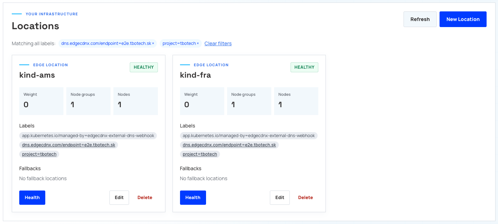
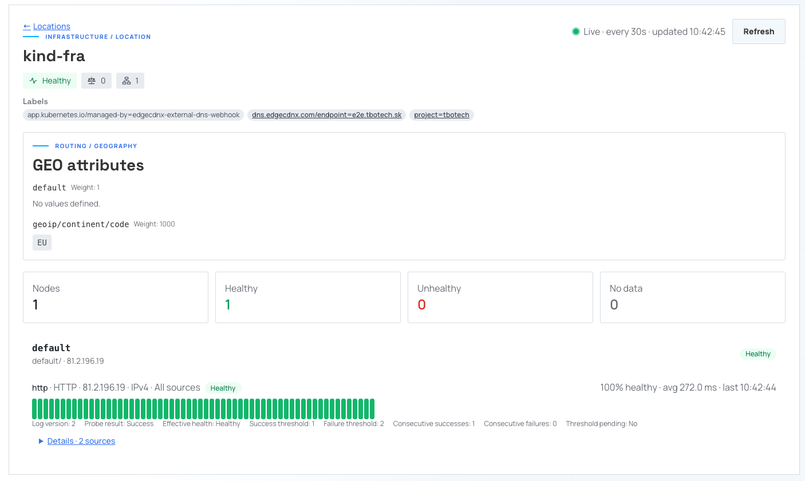

Configuring ExternalDNS
ExternalDNS watches Kubernetes resources and publishes their DNS records through the EdgeCDN-X ExternalDNS webhook. The webhook talks to the EdgeCDN-X Project API; you do not need to install the EdgeCDN-X controller or its CRDs in the application clusters.
This guide uses the two-cluster E2E layout: kind-fra and kind-ams publish
e2e.tbotech.sk through one Project. ExternalDNS and the webhook run together
in one Pod per cluster.
For local image building/loading and the automated test workflow, see the webhook E2E guide. The deployment below is based on its deployment template and example configuration.
Prerequisites
- Active account on https://portal.edgecdnx.com
- Kubernetes clusters accessible through
kubectl; the examples useskindclusters with contextskind-fraandkind-ams. - An EdgeCDN-X Project with a Zone covering your application hostname.
- A Project-scoped API key. Simple DNS management requires Zone
readandupdatepermissions. Routing annotations also require access to read and manage Locations and, when enabled, HealthCheckProfiles. - Network access from the webhook to the EdgeCDN-X API.
- Access from both clusters to the released webhook image,
ghcr.io/edgecdn-x/edgecdnx-external-dns-webhook:latest. For reproducible deployments, pin the image to a release tag or digest instead oflatest. envsubstfor rendering the deployment example.
The example pins ExternalDNS to v0.24.0, as in the E2E harness. Since
ExternalDNS v0.22.0, the default annotation prefix is
external-dns.kubernetes.io/. Older versions use
external-dns.alpha.kubernetes.io/; newer versions read that legacy prefix
only with --enable-legacy-annotation-prefix.
If the E2E demo is already deployed in both contexts, skip deployment and start with verification. The publishing examples are illustrative: do not apply them over an existing demo unless you intend to change its hostname, targets, and routing policy.
Create the two kind clusters
For a local demo, install kind,
Docker, and kubectl, and ensure Docker is running. Skip this step if your
fra and ams clusters already exist.
kind create cluster --name fra --wait 120s
kind create cluster --name ams --wait 120s
kubectl --context kind-fra get nodes
kubectl --context kind-ams get nodes
kind creates the kubeconfig contexts kind-fra and kind-ams automatically.
Each command creates a single-node cluster; no port mappings or Ingress
controller are needed for the DNS-only example below. Both clusters run locally:
the names describe the demo's routing identities, not physical regions.
The deployment pulls the released webhook image from GHCR, so no local image
build or kind load docker-image step is required.
Deploy ExternalDNS and the webhook
1. Provide the API key
Create the namespace and a Secret in each cluster. Store the API key in a protected local file outside your repository, containing only the key with no trailing newline. Substitute its path below, or provision the same Secret through your secret manager.
for context in kind-fra kind-ams; do
kubectl --context "$context" create namespace external-dns \
--dry-run=client -o yaml | kubectl --context "$context" apply -f -
kubectl --context "$context" -n external-dns \
create secret generic edgecdnx-api-key \
--from-file=apiKey=/secure/path/edgecdnx-api-key \
--dry-run=client -o yaml | kubectl --context "$context" apply -f -
done
2. Create the deployment manifest
Save the following as external-dns.yaml.tmpl. It installs a ServiceAccount,
read-only Kubernetes RBAC, and a Deployment with both containers.
apiVersion: v1
kind: ServiceAccount
metadata:
name: external-dns
namespace: external-dns
---
apiVersion: rbac.authorization.k8s.io/v1
kind: ClusterRole
metadata:
name: external-dns
rules:
- apiGroups: [""]
resources: ["services", "endpoints", "pods", "namespaces", "nodes"]
verbs: ["get", "watch", "list"]
- apiGroups: ["networking.k8s.io"]
resources: ["ingresses"]
verbs: ["get", "watch", "list"]
---
apiVersion: rbac.authorization.k8s.io/v1
kind: ClusterRoleBinding
metadata:
name: external-dns
roleRef:
apiGroup: rbac.authorization.k8s.io
kind: ClusterRole
name: external-dns
subjects:
- kind: ServiceAccount
name: external-dns
namespace: external-dns
---
apiVersion: apps/v1
kind: Deployment
metadata:
name: external-dns
namespace: external-dns
spec:
replicas: 1
selector:
matchLabels:
app.kubernetes.io/name: external-dns
template:
metadata:
labels:
app.kubernetes.io/name: external-dns
spec:
serviceAccountName: external-dns
containers:
- name: external-dns
image: registry.k8s.io/external-dns/external-dns:v0.24.0
args:
- --source=ingress
- --provider=webhook
- --webhook-provider-url=http://localhost:8888
- --registry=txt
- --txt-owner-id=${TXT_OWNER}
- --txt-prefix=${TXT_PREFIX}
- --policy=sync
- --interval=30s
- --log-level=info
- name: edgecdnx-webhook
image: ${WEBHOOK_IMAGE}
imagePullPolicy: Always
env:
- name: EDGECDNX_API_URL
value: "${EDGECDNX_API_URL}"
- name: EDGECDNX_PROJECT_ID
value: "${EDGECDNX_PROJECT_ID}"
- name: EDGECDNX_API_KEY
valueFrom:
secretKeyRef:
name: edgecdnx-api-key
key: apiKey
- name: WEBHOOK_LISTEN_ADDRESS
value: "0.0.0.0:8888"
- name: LOG_LEVEL
value: info
readinessProbe:
httpGet:
path: /healthz
port: 8888
initialDelaySeconds: 2
periodSeconds: 5
3. Apply to each cluster
Set the non-secret connection details. Both clusters must be able to pull the released image from GHCR.
export EDGECDNX_API_URL=https://api.edgecdnx.com
export EDGECDNX_PROJECT_ID=my-project
export WEBHOOK_IMAGE=ghcr.io/edgecdn-x/edgecdnx-external-dns-webhook:latest
for cluster in fra ams; do
export TXT_OWNER="$cluster"
export TXT_PREFIX="$cluster-"
envsubst '${TXT_OWNER} ${TXT_PREFIX} ${WEBHOOK_IMAGE} ${EDGECDNX_API_URL} ${EDGECDNX_PROJECT_ID}' \
< external-dns.yaml.tmpl |
kubectl --context "kind-$cluster" apply -f -
kubectl --context "kind-$cluster" -n external-dns \
rollout status deployment/external-dns --timeout=120s
done
imagePullPolicy: Always checks the registry whenever the webhook container
starts, which avoids reusing a stale local latest tag. A new registry image
does not automatically restart running Pods; roll out updates explicitly.
The important settings are:
| Setting | Frankfurt | Amsterdam | Purpose |
|---|---|---|---|
| Kubernetes context | kind-fra |
kind-ams |
Selects the application cluster. |
--txt-owner-id |
fra |
ams |
Identifies each ExternalDNS instance's records. |
--txt-prefix |
fra- |
ams- |
Keeps ownership TXT records separate for a shared hostname. |
Ingress set-identifier |
kind-fra |
kind-ams |
Names the Location created in EdgeCDN-X. |
Both the TXT owner ID and TXT prefix must differ between clusters sharing a hostname. Keep these identities stable across redeployments. Use a unique set-identifier for each independently managed Location in the Project; do not reuse a Location name for unrelated hostnames.
The webhook derives domain filters from the Project's Zones. --source=ingress
watches Ingress resources across namespaces with this RBAC. --policy=sync
allows deletions as well as creates and updates; use --policy=upsert-only if
you intentionally want to disable automatic deletion.
After rotating the API key Secret, restart the Deployment in each context so the webhook receives the new environment value.
Publish a hostname from both clusters
This example uses weighted routing: Frankfurt has weight 70, Amsterdam 30.
The examples use the demo hostname e2e.tbotech.sk. For your own deployment,
replace it with a hostname in your Project's Zone and replace the documentation
IP addresses with real, reachable application targets.
Save this as ingress-fra.yaml:
apiVersion: networking.k8s.io/v1
kind: Ingress
metadata:
name: e2e-app
namespace: default
annotations:
external-dns.kubernetes.io/target: "203.0.113.10"
external-dns.kubernetes.io/set-identifier: kind-fra
external-dns.kubernetes.io/ttl: "60"
external-dns.kubernetes.io/webhook-edgecdnx-routing: wrr
external-dns.kubernetes.io/webhook-edgecdnx-weight: "70"
spec:
rules:
- host: e2e.tbotech.sk
http:
paths:
- path: /
pathType: Prefix
backend:
service:
name: e2e-backend
port:
number: 80
Create ingress-ams.yaml with the same hostname and backend, changing:
external-dns.kubernetes.io/target: "198.51.100.20"
external-dns.kubernetes.io/set-identifier: kind-ams
external-dns.kubernetes.io/webhook-edgecdnx-weight: "30"
Apply each manifest to its own cluster:
kubectl --context kind-fra apply -f ingress-fra.yaml
kubectl --context kind-ams apply -f ingress-ams.yaml
The explicit target annotation supplies the DNS target without relying on an
Ingress controller's status address. The E2E example therefore needs no Ingress
controller or running backend Service to demonstrate DNS provisioning. It does
not deploy an application: for real traffic, the target must serve your
application, and a real Ingress deployment needs its controller and backend.
After reconciliation, expect two Locations named kind-fra and kind-ams, with
their target IPs in the default node group, and one shared Weighted DNSEndpoint
for the hostname and record type. The TXT registry also creates separate
ownership records for the two clusters.
Choose a routing policy
All annotation suffixes below follow
external-dns.kubernetes.io/webhook-.
| Routing value | EdgeCDN-X policy | Additional annotations |
|---|---|---|
simple or omitted |
Simple |
No set-identifier or other edgecdnx-* settings. Publishes targets directly. |
wrr |
Weighted |
edgecdnx-weight: required integer from 0 to 1000. |
geo |
Geolocation |
edgecdnx-continents, edgecdnx-countries, and/or edgecdnx-geo-default: "true". At least one must select a region or enable the default. |
rr |
RoundRobin |
No policy-specific annotations. |
failover |
Failover |
edgecdnx-failover-role: primary (default) or secondary. Primary requires edgecdnx-fallback naming the fallback Location. |
Non-simple routing requires a valid DNS-1123 set-identifier and IP targets
producing A records. It cannot route a CNAME target through Locations.
All clusters publishing the same hostname and record type should use a
consistent routing policy and TTL.
For geolocation, replace the weighted routing annotations on Frankfurt with:
external-dns.kubernetes.io/webhook-edgecdnx-routing: geo
external-dns.kubernetes.io/webhook-edgecdnx-continents: EU
external-dns.kubernetes.io/webhook-edgecdnx-countries: DE,AT,CH
On Amsterdam, use the same geo routing value and, for a catch-all Location:
Continent and country values are comma-separated uppercase two-letter codes. They are routing criteria, not a declaration of the cluster's physical location.
For failover, configure Frankfurt with:
external-dns.kubernetes.io/webhook-edgecdnx-routing: failover
external-dns.kubernetes.io/webhook-edgecdnx-failover-role: primary
external-dns.kubernetes.io/webhook-edgecdnx-fallback: kind-ams
Configure Amsterdam with:
external-dns.kubernetes.io/webhook-edgecdnx-routing: failover
external-dns.kubernetes.io/webhook-edgecdnx-failover-role: secondary
The primary publishes the Failover endpoint; the secondary provisions its Location without replacing the endpoint's primary target. See Location routing policies for how EdgeCDN-X selects nodes and follows fallback Locations.
When changing policies, remove annotations that belonged to the previous
policy. For example, webhook-edgecdnx-weight is rejected with geo. Update
both clusters' manifests rather than leaving a mixed-policy shared hostname.
Add health checks
For any non-simple policy, add these annotations to each Ingress:
external-dns.kubernetes.io/webhook-edgecdnx-health-endpoint: /healthz
external-dns.kubernetes.io/webhook-edgecdnx-health-protocol: http
external-dns.kubernetes.io/webhook-edgecdnx-health-port: "80"
The webhook creates a HealthCheckProfile named after the set-identifier and
attaches it to the Location's default node group. The HTTP Host header uses the
record's hostname. The protocol defaults to http; the port defaults to 80
or 443 according to the protocol. The path must start with /, and an explicit
port must be between 1 and 65535. Protocol and port annotations require a
health endpoint annotation.
The profile configures checks; it does not make an unreachable target healthy. Use addresses and paths reachable by the EdgeCDN-X health check infrastructure. The documentation IPs above are not real health-check targets. See Defining Health Checks for health-check operation.
Verify the deployment and records
These commands are read-only and work with an already deployed E2E demo:
for context in kind-fra kind-ams; do
echo "=== $context ==="
kubectl --context "$context" -n external-dns get pods
kubectl --context "$context" -n default get ingress e2e-app -o yaml
kubectl --context "$context" -n external-dns \
logs deployment/external-dns -c external-dns --tail=50
kubectl --context "$context" -n external-dns \
logs deployment/external-dns -c edgecdnx-webhook --tail=50
done
Allow at least one reconciliation interval (configured above as 30s). Check
the Ingress hostname, target, set-identifier, and routing annotations in each
context before interpreting the API result.
In the EdgeCDN-X UI or Project API, inspect:
- Locations: one per set-identifier, with the correct target IPs and policy settings.
- HealthCheckProfiles: one per Location when health annotations are enabled.
- Zone DNS endpoints: one shared routed endpoint per hostname and record type, plus each cluster's ownership TXT records.
Locations:

Also check the Location Health

Once the Zone is served by EdgeCDN-X DNS, query an authoritative server directly:
Use your own hostname if you changed it from e2e.tbotech.sk.
API provisioning and authoritative DNS resolution are separate checks;
public resolution also requires the appropriate Zone delegation. Cached
responses and node health affect observed answers, so a single DNS query is not
proof of a weighted traffic distribution.
Troubleshooting and lifecycle
| Symptom | Check |
|---|---|
| Webhook Pod does not start | Secret edgecdnx-api-key, key apiKey, image availability, and API environment variables. |
| Webhook connection refused or readiness fails | Listener address, port 8888, and probe configuration. |
| API authorization errors | Project ID, API key scope, and permissions for Zones, Locations, and HealthCheckProfiles as applicable. |
| Hostname is not published | The Project has a matching Zone; the Ingress has a host and target; annotation prefix matches the ExternalDNS version. |
HTTP 400 from the webhook |
Missing/invalid set-identifier, non-IP routed targets, invalid annotation values, or annotations from another policy. |
| Clusters overwrite or ignore each other's records | Distinct, stable TXT owner IDs and TXT prefixes, distinct set-identifiers, and consistent routing policy. |
| Existing Location cannot be adopted | The webhook refuses to modify Locations without its management and endpoint labels; choose a new set-identifier. |
| DNS returns no usable target | Inspect authoritative DNS, Location health and maintenance state, real target reachability, and Zone delegation. |
Set LOG_LEVEL=debug on the webhook and --log-level=debug on ExternalDNS
temporarily for more detail. Debug logs include DNS endpoint data; treat them
according to your operational logging policy.
Locations created by the webhook carry
app.kubernetes.io/managed-by: edgecdnx-external-dns-webhook and
dns.edgecdnx.com/endpoint labels. Do not manually repurpose these managed
resources; update the owning Ingress instead.
With --policy=sync, removing an Ingress lets ExternalDNS reconcile removal of
that cluster's managed contribution. Keep ExternalDNS running until the API
resources have reconciled, and verify the other cluster still serves the shared
hostname. Deleting the Deployment or kind cluster first does not send DNS
deletions and can leave remote resources behind.